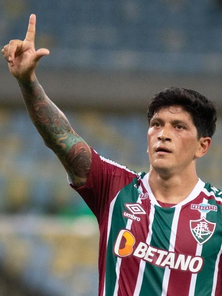

|
 |
Germán Ezequiel Cano Recalde (Lomas de Zamora, 2 de janeiro de 1988)[3] é um futebolista
argentino
que atua como centroavante.
Descrito como um atacante "letal"[4][5] e exaltado por seu repertório de finalizações[6][7] e
posicionamento,[8][9] é considerado um dos grandes atacantes do futebol brasileiro e conhecido
por
comemorar seus gols fazendo o gesto de uma letra "L" com as mãos, em homenagem ao filho,
Lorenzo.[10]
Estreou no futebol profissional em 2008, pelo Lanús-ARG, e passou por clubes do futebol
argentino e
paraguaio até ser contratado pelo Independiente Medellín-COL em 2012, clube pelo qual marcou 54
gols
em três temporadas. Em 2015, foi contratado pelo Pachuca-MEX e integrou o elenco campeão da Liga
dos
Campeões da CONCACAF de 2016-17.[11]. Atualmente joga pelo fluminense, clube o qual se tornou um
dos
maiores artilheiros da história do clube.
|
|